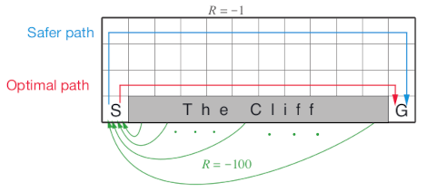
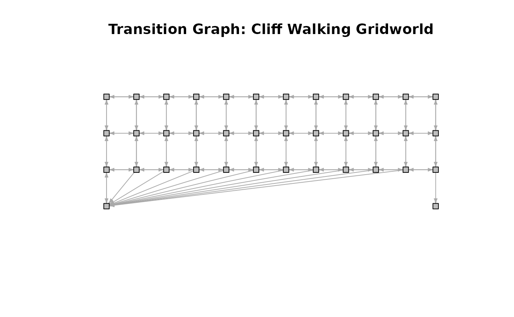
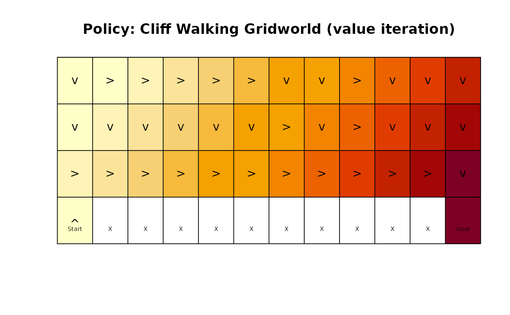
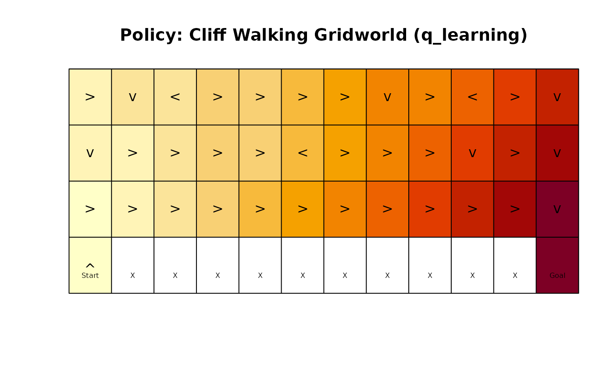
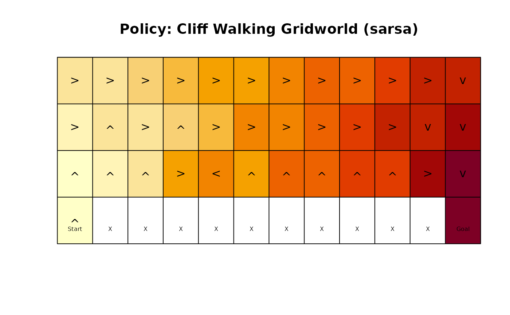
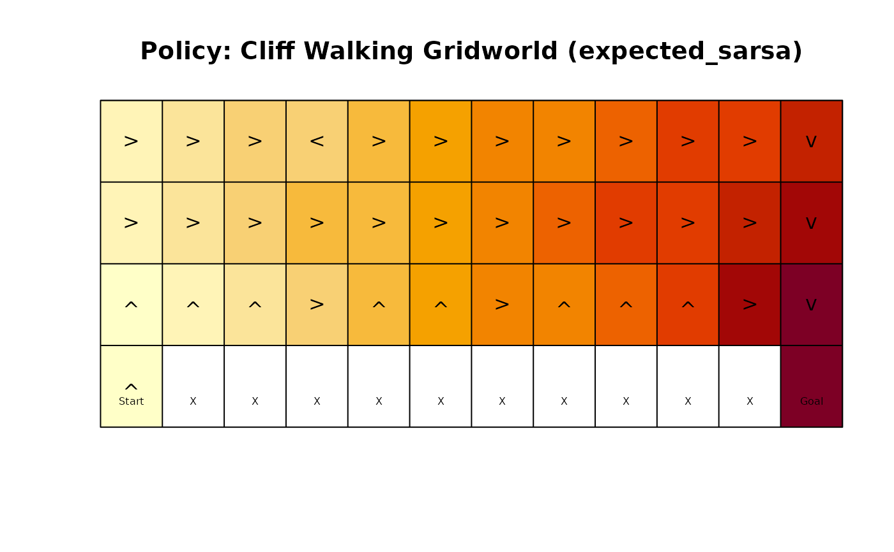

The cliff walking gridworld MDP example from Chapter 6 of the textbook "Reinforcement Learning: An Introduction."
Format
An object of class MDP.
Details
The cliff walking gridworld has the following layout:

The gridworld is represented as a 4 x 12 matrix of states. The states are labeled with their x and y coordinates. The start state is in the bottom left corner. Each action has a reward of -1, falling off the cliff has a reward of -100 and returns the agent back to the start. The episode is finished once the agent reaches the absorbing goal state in the bottom right corner. No discounting is used (i.e., \(\gamma = 1\)).
References
Richard S. Sutton and Andrew G. Barto (2018). Reinforcement Learning: An Introduction Second Edition, MIT Press, Cambridge, MA.
See also
Other MDP_examples:
DynaMaze,
MDP(),
Maze,
Windy_gridworld
Other gridworld:
DynaMaze,
Maze,
Windy_gridworld,
gridworld
Examples
data(Cliff_walking)
Cliff_walking
#> MDP, list - Cliff Walking Gridworld
#> Discount factor: 1
#> Horizon: Inf epochs
#> Size: 38 states / 4 actions
#> Start: s(4,1)
#>
#> List components: ‘name’, ‘discount’, ‘horizon’, ‘states’, ‘actions’,
#> ‘transition_prob’, ‘reward’, ‘info’, ‘start’
gridworld_matrix(Cliff_walking)
#> [,1] [,2] [,3] [,4] [,5] [,6] [,7] [,8]
#> [1,] "s(1,1)" "s(1,2)" "s(1,3)" "s(1,4)" "s(1,5)" "s(1,6)" "s(1,7)" "s(1,8)"
#> [2,] "s(2,1)" "s(2,2)" "s(2,3)" "s(2,4)" "s(2,5)" "s(2,6)" "s(2,7)" "s(2,8)"
#> [3,] "s(3,1)" "s(3,2)" "s(3,3)" "s(3,4)" "s(3,5)" "s(3,6)" "s(3,7)" "s(3,8)"
#> [4,] "s(4,1)" NA NA NA NA NA NA NA
#> [,9] [,10] [,11] [,12]
#> [1,] "s(1,9)" "s(1,10)" "s(1,11)" "s(1,12)"
#> [2,] "s(2,9)" "s(2,10)" "s(2,11)" "s(2,12)"
#> [3,] "s(3,9)" "s(3,10)" "s(3,11)" "s(3,12)"
#> [4,] NA NA NA "s(4,12)"
gridworld_matrix(Cliff_walking, what = "labels")
#> [,1] [,2] [,3] [,4] [,5] [,6] [,7] [,8] [,9] [,10] [,11] [,12]
#> [1,] "" "" "" "" "" "" "" "" "" "" "" ""
#> [2,] "" "" "" "" "" "" "" "" "" "" "" ""
#> [3,] "" "" "" "" "" "" "" "" "" "" "" ""
#> [4,] "Start" "X" "X" "X" "X" "X" "X" "X" "X" "X" "X" "Goal"
# The Goal is an absorbing state
which(absorbing_states(Cliff_walking))
#> s(4,12)
#> 38
# visualize the transition graph
gridworld_plot_transition_graph(Cliff_walking)

# solve using different methods
sol <- solve_MDP(Cliff_walking)
sol
#> MDP, list - Cliff Walking Gridworld
#> Discount factor: 1
#> Horizon: Inf epochs
#> Size: 38 states / 4 actions
#> Start: s(4,1)
#> Solved:
#> Method: ‘value iteration’
#> Solution converged: TRUE
#>
#> List components: ‘name’, ‘discount’, ‘horizon’, ‘states’, ‘actions’,
#> ‘transition_prob’, ‘reward’, ‘info’, ‘start’, ‘solution’
policy(sol)
#> state U action
#> 1 s(1,1) -14 down
#> 2 s(2,1) -13 down
#> 3 s(3,1) -12 right
#> 4 s(4,1) -13 up
#> 5 s(1,2) -13 right
#> 6 s(2,2) -12 down
#> 7 s(3,2) -11 right
#> 8 s(1,3) -12 right
#> 9 s(2,3) -11 down
#> 10 s(3,3) -10 right
#> 11 s(1,4) -11 right
#> 12 s(2,4) -10 down
#> 13 s(3,4) -9 right
#> 14 s(1,5) -10 right
#> 15 s(2,5) -9 down
#> 16 s(3,5) -8 right
#> 17 s(1,6) -9 right
#> 18 s(2,6) -8 down
#> 19 s(3,6) -7 right
#> 20 s(1,7) -8 down
#> 21 s(2,7) -7 right
#> 22 s(3,7) -6 right
#> 23 s(1,8) -7 down
#> 24 s(2,8) -6 down
#> 25 s(3,8) -5 right
#> 26 s(1,9) -6 right
#> 27 s(2,9) -5 right
#> 28 s(3,9) -4 right
#> 29 s(1,10) -5 down
#> 30 s(2,10) -4 down
#> 31 s(3,10) -3 right
#> 32 s(1,11) -4 down
#> 33 s(2,11) -3 down
#> 34 s(3,11) -2 right
#> 35 s(1,12) -3 down
#> 36 s(2,12) -2 down
#> 37 s(3,12) -1 down
#> 38 s(4,12) 0 left
gridworld_plot_policy(sol)

sol <- solve_MDP(Cliff_walking, method = "q_learning", N = 100)
sol
#> MDP, list - Cliff Walking Gridworld
#> Discount factor: 1
#> Horizon: Inf epochs
#> Size: 38 states / 4 actions
#> Start: s(4,1)
#> Solved:
#> Method: ‘q_learning’
#> Solution converged: NA
#>
#> List components: ‘name’, ‘discount’, ‘horizon’, ‘states’, ‘actions’,
#> ‘transition_prob’, ‘reward’, ‘info’, ‘start’, ‘solution’
policy(sol)
#> state U action
#> 1 s(1,1) -11.007765 right
#> 2 s(2,1) -11.437735 down
#> 3 s(3,1) -12.000000 right
#> 4 s(4,1) -13.000000 up
#> 5 s(1,2) -10.565666 down
#> 6 s(2,2) -11.062304 right
#> 7 s(3,2) -11.000000 right
#> 8 s(1,3) -10.191020 left
#> 9 s(2,3) -10.256013 right
#> 10 s(3,3) -10.000000 right
#> 11 s(1,4) -9.581794 right
#> 12 s(2,4) -9.433782 right
#> 13 s(3,4) -9.000000 right
#> 14 s(1,5) -8.758576 right
#> 15 s(2,5) -8.736604 right
#> 16 s(3,5) -8.000000 right
#> 17 s(1,6) -7.935757 right
#> 18 s(2,6) -7.786146 left
#> 19 s(3,6) -7.000000 right
#> 20 s(1,7) -7.031466 right
#> 21 s(2,7) -6.877923 right
#> 22 s(3,7) -6.000000 right
#> 23 s(1,8) -6.296215 down
#> 24 s(2,8) -5.922116 right
#> 25 s(3,8) -5.000000 right
#> 26 s(1,9) -5.502661 right
#> 27 s(2,9) -4.952676 right
#> 28 s(3,9) -4.000000 right
#> 29 s(1,10) -4.624817 left
#> 30 s(2,10) -3.990246 down
#> 31 s(3,10) -3.000000 right
#> 32 s(1,11) -3.826406 right
#> 33 s(2,11) -2.998893 right
#> 34 s(3,11) -2.000000 right
#> 35 s(1,12) -2.973196 down
#> 36 s(2,12) -1.999969 down
#> 37 s(3,12) -1.000000 down
#> 38 s(4,12) 0.000000 right
gridworld_plot_policy(sol)

sol <- solve_MDP(Cliff_walking, method = "sarsa", N = 100)
sol
#> MDP, list - Cliff Walking Gridworld
#> Discount factor: 1
#> Horizon: Inf epochs
#> Size: 38 states / 4 actions
#> Start: s(4,1)
#> Solved:
#> Method: ‘sarsa’
#> Solution converged: NA
#>
#> List components: ‘name’, ‘discount’, ‘horizon’, ‘states’, ‘actions’,
#> ‘transition_prob’, ‘reward’, ‘info’, ‘start’, ‘solution’
policy(sol)
#> state U action
#> 1 s(1,1) -14.784002 right
#> 2 s(2,1) -15.551555 right
#> 3 s(3,1) -16.463513 up
#> 4 s(4,1) -17.765462 up
#> 5 s(1,2) -13.682173 right
#> 6 s(2,2) -14.607755 up
#> 7 s(3,2) -15.696257 up
#> 8 s(1,3) -13.051177 right
#> 9 s(2,3) -13.412251 right
#> 10 s(3,3) -14.278612 up
#> 11 s(1,4) -11.484535 right
#> 12 s(2,4) -12.484011 up
#> 13 s(3,4) -8.886641 right
#> 14 s(1,5) -10.253962 right
#> 15 s(2,5) -10.393736 right
#> 16 s(3,5) -7.445004 left
#> 17 s(1,6) -9.450991 right
#> 18 s(2,6) -8.406104 right
#> 19 s(3,6) -9.933978 up
#> 20 s(1,7) -8.453483 right
#> 21 s(2,7) -7.639815 right
#> 22 s(3,7) -7.398935 up
#> 23 s(1,8) -7.250561 right
#> 24 s(2,8) -6.044051 right
#> 25 s(3,8) -7.108668 up
#> 26 s(1,9) -6.242951 right
#> 27 s(2,9) -5.015460 right
#> 28 s(3,9) -5.144058 up
#> 29 s(1,10) -5.144523 right
#> 30 s(2,10) -4.003977 right
#> 31 s(3,10) -5.050030 up
#> 32 s(1,11) -4.110244 right
#> 33 s(2,11) -3.000663 down
#> 34 s(3,11) -2.000053 right
#> 35 s(1,12) -3.131182 down
#> 36 s(2,12) -2.062157 down
#> 37 s(3,12) -1.000000 down
#> 38 s(4,12) 0.000000 down
gridworld_plot_policy(sol)

sol <- solve_MDP(Cliff_walking, method = "expected_sarsa", N = 100, alpha = 1)
policy(sol)
#> state U action
#> 1 s(1,1) -14.833002 right
#> 2 s(2,1) -14.990592 right
#> 3 s(3,1) -16.074891 up
#> 4 s(4,1) -17.386005 up
#> 5 s(1,2) -13.753367 right
#> 6 s(2,2) -13.816838 right
#> 7 s(3,2) -14.990794 up
#> 8 s(1,3) -12.728682 right
#> 9 s(2,3) -12.629606 right
#> 10 s(3,3) -13.557741 up
#> 11 s(1,4) -11.775120 left
#> 12 s(2,4) -11.445046 right
#> 13 s(3,4) -12.268714 right
#> 14 s(1,5) -10.765974 right
#> 15 s(2,5) -10.307596 right
#> 16 s(3,5) -11.041147 up
#> 17 s(1,6) -9.679098 right
#> 18 s(2,6) -9.097292 right
#> 19 s(3,6) -10.050275 up
#> 20 s(1,7) -8.630162 right
#> 21 s(2,7) -7.974318 right
#> 22 s(3,7) -7.717000 right
#> 23 s(1,8) -7.596775 right
#> 24 s(2,8) -6.761085 right
#> 25 s(3,8) -7.820090 up
#> 26 s(1,9) -6.522776 right
#> 27 s(2,9) -5.696948 right
#> 28 s(3,9) -6.713505 up
#> 29 s(1,10) -5.470401 right
#> 30 s(2,10) -4.477018 right
#> 31 s(3,10) -5.696948 up
#> 32 s(1,11) -4.397071 right
#> 33 s(2,11) -3.299232 right
#> 34 s(3,11) -2.156079 right
#> 35 s(1,12) -3.299232 down
#> 36 s(2,12) -2.156811 down
#> 37 s(3,12) -1.000000 down
#> 38 s(4,12) 0.000000 down
gridworld_plot_policy(sol)
